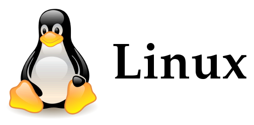

| Fullname: | Efstathios Agrapidis |
| Date of birth: | 8 June 1987 |
| Nationality: | Greek |
| Family status: | living with partner |
| Address of residence: | Leicester, UK |
| Telephone: | (not for your eyes) |
| e-mail: | (not for your eyes) |
| github profile: | Go there |
English: Fluency. Edexcel level 5 - (C2 - Proficiency).
French: Very good. DELF A2 (section A6)
Driving: A and B class driving licence.
Music: Teacher's Diploma by the greek ministry of culture
I am currently a Master’s degree student in Communication and Information systems. I am working on a career path change from the IT support to the software development field. My personal goals are not only to improve my current skill-set, acquired during my computer science graduate and my soon to complete master’s program, but also to learn and perfect new ones. So, I am looking for a junior/graduate development role, through which I will experience a complete set of development technologies, during all aspects of the software lifecycle.
My degree’s curriculum includes courses focusing on object oriented development (java, c++) using designing technologies (UML). Other relative knowledge acquired are the basics of JSP, linux systems’ management, information systems security, database design and management (relational model, SQL) and many more. The master I will soon graduate from, complements these to the database engineering field, security frameworks (COBIT) and mobile applications development for the android platform. Feel free to examine some examples of semester and other projects on my github account. For the master’s programme to complete I only have to finish my thesis. The subject is a scientific simulation software on groundwave propagation, written in C and it is nearly finished.
During my studies I have worked as a freelancer on a variety of IT projects and job positions from which I have also gained acknowledgeable skills. Specifically, my main expertise is on the open source software where I have contributed from different roles (i.e. documentation, localization of software and articles for the community, bug reporting, building and maintenance of RPM packages) and developed my analytical skills. By cooperating with people from different cultures as an open source supporter and my job experience as a customer support agent in Greek telecommunication services (OTE), I enhanced my teamwork and communication skills respectively.
